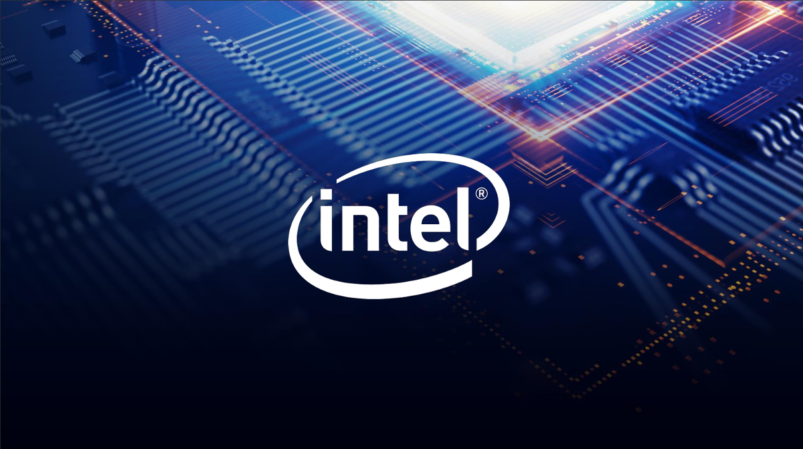

|  |
Intel Core is a line of streamlined midrange consumer, workstation and enthusiast computer central processing units (CPUs) marketed by Intel Corporation. These processors displaced the existing mid- to high-end Pentium processors at the time of their introduction, moving the Pentium to the entry level. Identical or more capable versions of Core processors are also sold as Xeon processors for the server and workstation markets. The lineup of Core processors includes the Intel Core i3, Intel Core i5, Intel Core i7, and Intel Core i9, along with the X-series of Intel Core CPUs. Although Intel Core is a brand that promises no internal consistency or continuity, the processors within this family have been, for the most part, broadly similar. The first products receiving this designation were the Core Solo and Core Duo Yonah processors for mobile from the Pentium M design tree, fabricated at 65 nm and brought to market in January 2006. These are substantially different in design than the rest of the Intel Core product group, having derived from the Pentium Pro lineage that predated Pentium 4. |
|
The first Intel Core desktop processor—and typical family member—came from the Conroe iteration, a 65 nm dual-core design brought to market in July 2006, based on the Intel Core microarchitecture with substantial enhancements in micro-architectural efficiency and performance, outperforming Pentium 4 across the board (or near to it), while operating at drastically lower clock rates. Maintaining high instructions per cycle (IPC) on a deeply pipelined and resourced out-of-order execution engine has remained a constant fixture of the Intel Core product group ever since. The new substantial bump in microarchitecture came with the introduction of the 45 nm Bloomfield desktop processor in November 2008 on the Nehalem architecture, whose main advantage came from redesigned I/O and memory systems featuring the new Intel QuickPath Interconnect and an integrated memory controller supporting up to three channels of DDR3 memory. Subsequent performance improvements have tended toward making additions rather than profound changes, such as adding the Advanced Vector Extensions instruction set extensions to Sandy Bridge, first released on 32 nm in January 2011. Time has also brought improved support for virtualization and a trend toward higher levels of system integration and management functionality (and along with that, increased performance) through the ongoing evolution of facilities such as Intel Active Management Technology. Since 2019, the Core brand has been based on four product lines, consisting of the entry level i3, the mainstream i5, the high-end i7, and the "enthusiast" i9. |
|